SELVARITHIK A&D Gateway and ESP32 user manual
Step by step setup operation configuration and testing
Version 1.0 · 29 October 2026 · Annotated demonstration images
Use the printable PDF or follow this offline guide. Preserve existing Wi-Fi, MQTT profiles and sensor settings unless making an intentional change.
1 Start here
- Keep the Gateway project at D:\esp32 selva\ESP32_LoRa_Project and firmware at D:\esp32 selva\ESP32_LoRa_ESP32_Firmware. Keep the current data directory and protected secret files together.
- For normal use, start the Gateway, sign in, check MQTT or Local IP status, then check fresh telemetry and send a PING. The following pages explain each step.
- For a new device, identify its real device ID, commission it locally, enroll that same ID, choose the intended transport, then verify ACK, execution RESPONSE and telemetry. Do not reset an already commissioned device just to test it.
Scope: the current local Windows Gateway and one shared ESP32 firmware using the saved MASTER or NODE role. Slave is the operator term for a NODE. ESP32 pages focus on communications and configuration; sensor values are viewed in the Gateway.
Version 1.0 of this manual documents the source on 29 October 2026. Gateway images use an isolated database and simulated responses. ESP32 images use the actual page source with simulated API replies. Numbered blue circles identify controls; none of the screenshots proves physical connectivity.
Existing BLE, Private Chat and OTA menu text may survive in legacy tools. Those features are outside this phase. Do not use this manual as approval to enable them.
Current deployment observation: local HTTP health passed; permanent MQTT worker reported connected. The separate saved device LAN listener reported BIND_FAILED. Hardware, current end-to-end telemetry and new commands require separate physical testing.
Back to contents
2 Start and stop the Gateway
- Open PowerShell. Change to the Gateway project directory using the first line below.
- Run Start-Gateway.ps1. It chooses the built Windows EXE when available, uses the existing project data directory and opens the browser unless NoBrowser is supplied.
- Open http://127.0.0.1:5000 on this laptop. Sign in with your existing Gateway account. Keep the laptop awake during device tests.
- Use the status command to check the production process. Use Stop-Gateway.ps1 when finished. Wait for STOPPED before restarting, restoring or rebuilding the EXE.
Automatic startup is installed for the current Windows user and runs after Windows sign-in. This is not a Windows service. A clean stop stays stopped until the next explicit start or next sign-in.
The previous command .\.venv\Scripts\python.exe backend\server.py now uses the production launcher too. Start one instance only. GATEWAY_ALREADY_RUNNING means use the existing process; do not kill unrelated Python programs.
127.0.0.1 belongs to the laptop. It is not the ESP32 address and cannot be used by the ESP32 to reach this laptop.
cd "D:\esp32 selva\ESP32_LoRa_Project"
.\deployment\Start-Gateway.ps1
.\dist\Gateway\Gateway.exe status --data-dir .\data
.\deployment\Stop-Gateway.ps1
Back to contents
3 Sign in and manage access
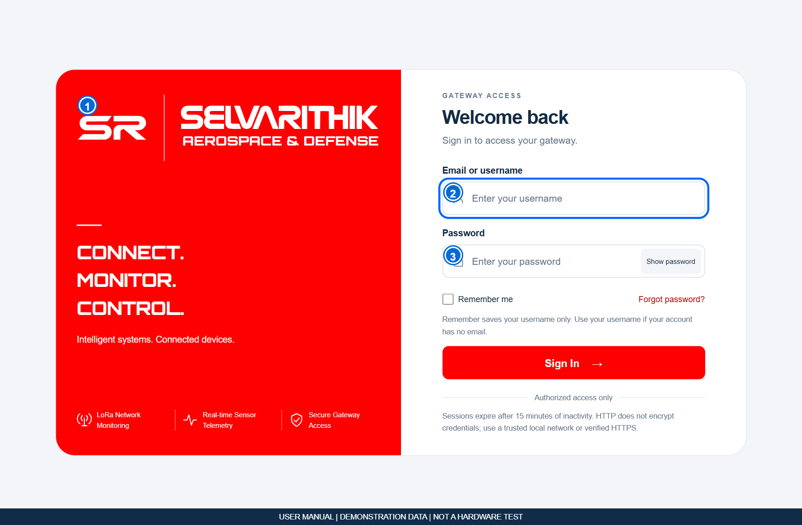
1. Company identity; 2. Existing Gateway username; 3. Existing Gateway password. Demonstration only; click image to enlarge.
- Open /login. Enter your Gateway username and saved password, then select Sign In. Do not assume admin/admin is still valid.
- If a temporary-password change is required, complete it before ordinary administration. Use your password manager; do not include passwords in screenshots or support messages.
- Open the profile menu and Account Settings to inspect your account. Authorized accounts can create or edit permitted accounts; available actions depend on creator, administrator or user role.
- After an account or password update, sign in again if sessions expire. Use Logout when leaving a shared laptop.
Remember me remembers the username only. It does not save the password. Restarted or expired sessions can return you to Sign in.
Forgotten Gateway credentials require the established local account recovery process. Do not edit password hashes, reset databases or use an ESP32 recovery helper for a Gateway account.
Gateway and ESP32 local accounts are separate. A successful Gateway login does not authenticate the ESP32 local page.
Back to contents
4 Use navigation and live telemetry
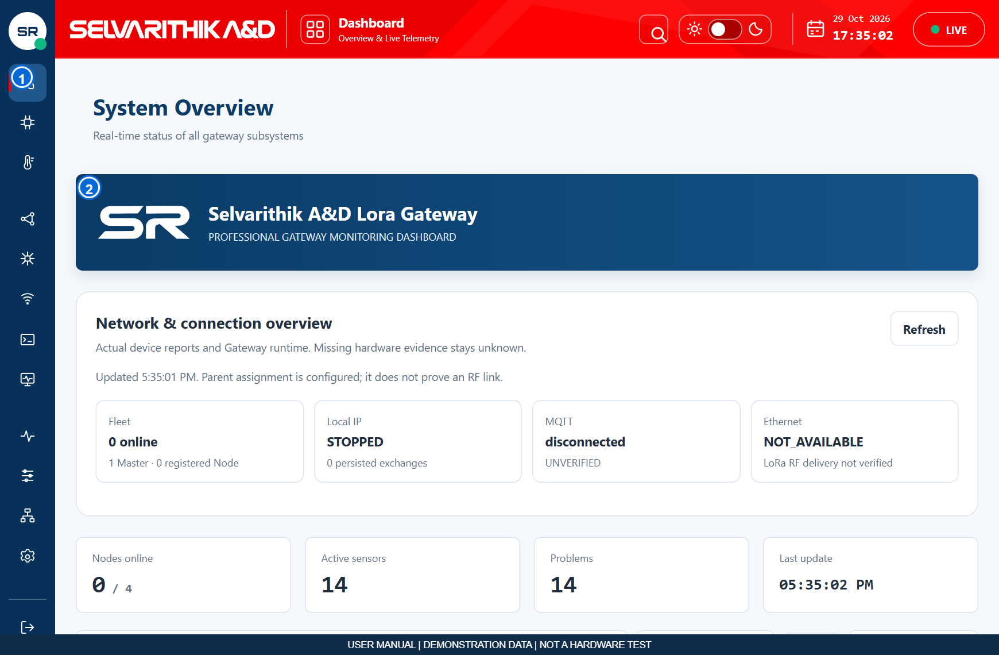
1. Navigation; 2. Gateway identity; 3. Live telemetry by device. Demonstration only; click image to enlarge.
- Use the left navigation on a laptop. On narrow screens use the menu button and scroll within the drawer to reach the same pages.
- Open Dashboard. Find Live Telemetry / All Nodes and select the intended node or state filter. Use Manage widgets to control the visible readings.
- Check the device name and identity, online indicator, measurement unit and Gateway received timestamp. Open ESP32 details for available reported connection and device information.
- Observe several reporting intervals. A green connection label alone does not prove fresh sensor data: timestamps and values must update when new measurements arrive.
- If a card becomes stale or offline, inspect sensor health and transport diagnostics before refreshing the whole page. An unchanged value can be a valid repeated measurement; an unchanged timestamp is the useful freshness signal.
The dashboard receives live Socket.IO updates with HTTP polling in the Windows production deployment. A page remaining open should not require repeated manual reloads.
Online state depends on recent device reports and configured heartbeat timing. Missing data is not zero. Do not treat an old reading as a live measurement.
Back to contents
5 Register and identify devices
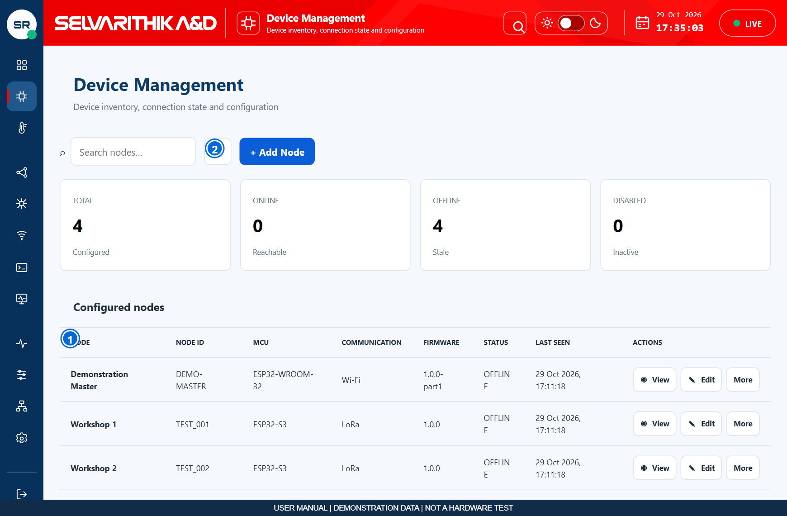
1. Page title; 2. Device registry; 3. Device actions. Demonstration only; click image to enlarge.
- Open Device Management. Match the device ID to its physical USB/status identity before adding or editing anything. A display name is not a new hardware identity.
- For an existing commissioned board, edit the existing record. Do not create another row for the same board because its COM port or DHCP IP changed.
- Use MASTER for the network coordinator and NODE for a Slave. A NODE must reference the intended Master identity and the correct node/radio address where required.
- Enroll new devices through the owner-run local enrollment tool shown below only after checking their actual identities. It stores protected credentials locally; it does not itself provision the ESP32.
- Confirm the enabled state, last seen time and reported role. Registration and configured parent assignment do not prove a LoRa link.
The UI includes legacy registry fields. Use Master / Node Controls and an actual device RESPONSE to change firmware settings; editing registry metadata is not proof that a physical board applied it.
The example ID below is deliberately a placeholder. Never enroll DEMO or TEST identities in production. Do not use token rotation switches for a routine connection check.
.\.venv\Scripts\python.exe backend\provision_device.py --id REAL_DEVICE_ID --name "Workshop Master" --role MASTER
Back to contents
6 Open Sensor Management
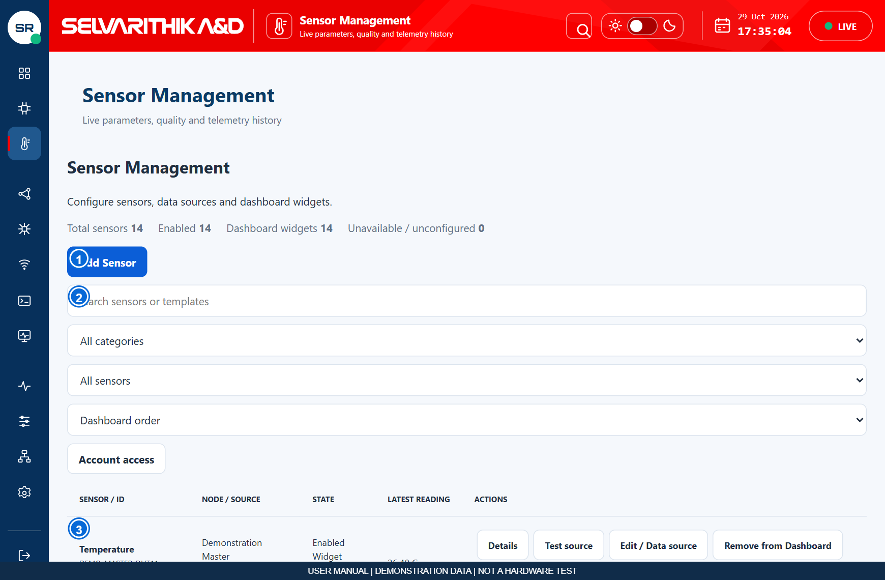
1. Add a mapping; 2. Search mappings; 3. Configured readings. Demonstration only; click image to enlarge.
- Open Sensor Management and choose the correct node. Search for an existing reading before adding another mapping.
- Inspect the Sensor / ID, Node / Source, State and Latest reading columns. Use the existing row action to edit a mapping, appearance or dashboard visibility.
- Choose Add Sensor only for a genuinely missing parameter. A widget template provides presentation defaults; it does not install a driver or detect a physical sensor.
- Keep a sensor enabled and its dashboard visibility on when it should appear in Live Telemetry. Disable or hide unused mappings instead of creating duplicate readings.
- Choose an icon and color appropriate to the quantity. The additional fan, flame, rain, magnet, door, weight, ruler, sound, compass and beaker icons are presentation options for future hardware.
There are 23 icon choices and 30 widget templates in this implementation. Actual supported firmware telemetry types remain DHT11, INA219 and MQ135. Choosing another template does not add physical support.
Back to contents
7 Map a sensor field step by step
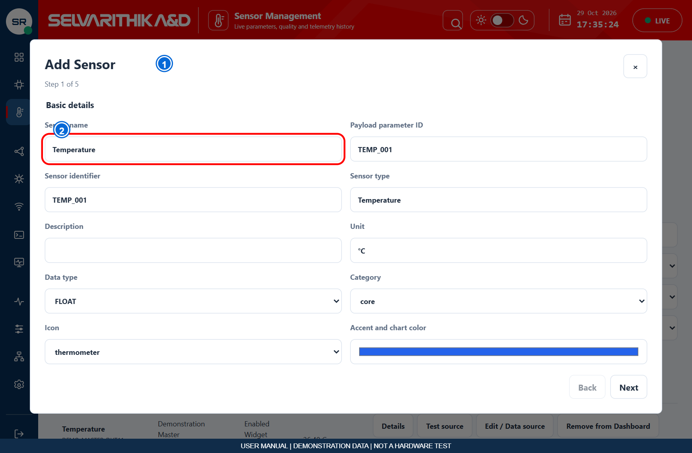
1. Sensor mapping editor; 2. Sensor management beneath editor. Demonstration only; click image to enlarge.
- Open Add Sensor or edit an existing mapping. Choose the node and an appropriate template. Set a clear display label.
- Choose node_telemetry as the data source for normal ESP32 values. Set Existing payload field to the exact incoming key, such as temperature or current.
- Set the numeric type, unit and displayed precision. Keep scale 1 and offset 0 for the existing already-normalized telemetry.
- Choose the icon, color, graph options, dashboard position and visibility offered by the editor. Use a stale timeout longer than the expected report interval and reconnect allowance.
- Save the mapping. Return to Dashboard, wait for a new device report and confirm the correct unit, timestamp and value. A successfully saved mapping with no matching field will not create a measurement.
Mapping calculation is received value × scale + offset. This is display conversion, not sensor calibration or firmware GPIO configuration.
source_field is a flat payload key. A dotted key is literal here; nested JSON-path lookup is not implemented. Keep the device identity and parameter identity distinct.
Back to contents
8 Understand sensor IDs and addresses
Device ID identifies the ESP32. Sensor ID identifies a logical sensor on it. parameter_id and source_field identify a measurement. A GPIO, I2C address and LoRa address are different things.
Example: DEMO-MASTER-DHT11-temperature is an illustrative per-reading sensor ID; temperature is its telemetry field. It is not a radio address or a GPIO.
INA219 R100 means a 0.1 ohm shunt, represented by 100 milliohms in firmware settings. Use the actual module shunt value. Zero or unknown calibration must not be replaced by a guessed current/power result.
MQ135 data remains raw and uncalibrated. A warmed-up module, measured divider gain, supply, load resistance, selected gas curve and known reference are required before gas concentration can be calculated meaningfully. No automatic calibration is claimed.
| Sensor | Exact fields | Physical connection or meaning |
|---|
| DHT11 | temperature, humidity | 3.3 V, DATA GPIO4, common GND. No I2C address. |
| INA219 | bus_voltage, shunt_voltage, current, power | 3.3 V, SDA21, SCL22. Configured address authoritative; common 0x40 = decimal 64. |
| MQ135 | mq135_adc_raw, mq135_pin_mv | 5 V module supply; AO through a verified divider to GPIO34. No I2C address. |
| TM1637 | Not a telemetry source | Master display only: CLK18, DIO19, 3.3 V, GND. |
| E220 node address | Not a sensor address | Address identifies the radio node; keep separate from all sensor IDs. |
9 Send the first PING command
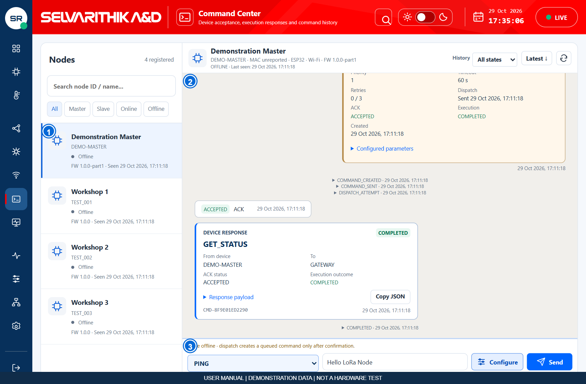
1. Select a device; 2. Commands and responses; 3. Command composer. Demonstration only; click image to enlarge.
- Open Command Center. Select the actual Master in the device list. Verify its identity and current online state.
- Choose PING from Command type. Enter a short non-secret message such as Connectivity check.
- Select Configure if you need to inspect timeout, ACK timeout, priority, expiry or maximum retries. Leave validated defaults for the first test.
- Select Send once. Record the created command ID. Wait for the outgoing card, an ACCEPTED ACK if received and a separate DEVICE RESPONSE with its execution result.
- Expand Response payload. Confirm the returned result corresponds to this same command and target. Capture the command ID and timestamps for support, without credentials.
A Gateway-created row means QUEUED, not delivered. SENT or a broker PUBACK is not a device ACK. ACCEPTED means accepted by the target, not successful execution.
The pictured exchange is simulated demonstration data. Repeat this test on a real connected Master to establish physical communication.
Back to contents
10 Read ACK and execution results
- Follow the same command ID through its outgoing card, ACK and RESPONSE. Check source, target, timeout, retries and dispatch time before interpreting a result.
- For COMPLETED, inspect the actual response payload. A successfully executed status query can still report DHT11 READ_ERROR; query success is not sensor health.
- For FAILED, read the reported error and capability status. For TIMEOUT, inspect transport availability and expiry rather than assuming the command did not execute.
- Use Stop dispatch to cancel future dispatch attempts where supported. It cannot undo work already accepted by a device.
- Before Retry, reconcile the old command and device state. Repeated restart, sleep or network-change actions need particular care. GET_COMMAND_RESULT can retrieve a cached result when the operational handler and management client are available.
| Displayed state | What it establishes |
|---|
| QUEUED | Gateway accepted a command into its queue. |
| SENT or WAITING_ACK | A dispatch attempt occurred; target receipt still unproven. |
| ACKNOWLEDGED or ACCEPTED ACK | Target accepted receipt; execution still pending. |
| COMPLETED | A correlated execution result was recorded. |
| FAILED | A reported rejection, execution error or other defined failure occurred. |
| TIMEOUT | Required ACK or result did not arrive before its deadline. |
| CANCELLED | Dispatch cancellation was recorded; physical work may already have begun. |
| Unknown or Not reported | No supported final evidence; do not label successful. |
11 Primary command reference one
The standard Command Center selector advertises these 21 primary commands. Availability still depends on the target firmware and connected hardware. Start with read-only queries. The following list is a command catalogue, not a claim of physical acceptance.
| Command | Use and expected result |
|---|
| PING | Round-trip query; returns correlated execution data. Optional message up to 128 UTF-8 bytes. |
| GET_STATUS | Reported device/communication state; missing hardware remains unavailable. |
| GET_CAPABILITIES | Discover target-supported commands and capabilities before using them. |
| GET_CONFIG | Read sanitized public settings and current revision. Secrets are excluded. |
| GET_NETWORK | Read station IP, Wi-Fi/reconnect and network diagnostics when reported. |
| GET_TELEMETRY | Request current sensor snapshot; inspect validity and update time. |
| GET_SENSOR_STATUS | Read sensor availability and errors, not a fabricated reading. |
| GET_POWER_STATUS | Read supported power/sleep state. Battery level requires real hardware. |
| GET_RADIO_STATUS | Read E220 state and available observations; READY alone is not an RF link. |
| GET_MESH_STATUS | Read node/routes/queue evidence when supported. |
| GET_NODE_STATUS | Read target node state. |
| GET_ROUTE_INFO | Read actual route information; configured parent is not route proof. |
12 Primary command reference two
Mutations require the authorized Gateway session and target validation. Obtain the latest revision before revision-sensitive edits. Do not change a working network or sensor configuration as part of a read-only test.
| Command | Use and limits |
|---|
| DIAGNOSTICS | Read supported diagnostic counters and fault evidence. |
| SET_DEVICE_NAME | Change display name, 1–64 UTF-8 bytes; does not replace hardware identity. |
| SET_TELEMETRY_INTERVAL | Payload seconds: integer 2–3600. Changes report timing persistently. |
| SET_HEARTBEAT_INTERVAL | Payload seconds: integer 5–3600. Changes heartbeat timing. |
| SET_SLEEP_SCHEDULE | Apply validated sleep fields and optional expected_revision; see sleep chapter. |
| CONFIG_UPDATE | Allowlisted public settings; special prepare/apply/confirm/cancel workflow for transport selection. |
| WIFI_SCAN | Asynchronous 2.4 GHz network scan using driver defaults; no custom band override. |
| WIFI_RECONNECT | Reconnect to the saved network; causes a temporary link interruption. |
| RESTART | Controlled restart after permitted work drains; reconnect and stored result are required for completion. |
Examples of payloads, not commands to run automatically:
PING: {"message":"Connectivity check"}
SET_TELEMETRY_INTERVAL: {"seconds":10}
SET_DEVICE_NAME: {"device_name":"Workshop Master","expected_revision":CURRENT_REVISION}
Back to contents
13 Operational command reference
Twelve additional operational handlers extend the primary catalogue. They are exposed in the authenticated operational registry/API; the current standard dropdown still lists the 21 primary commands. A handler existing in source does not mean a dedicated visible button exists.
Use an authorized integration client and the reported capability/argument schema for these operations. Do not type arbitrary shell commands into Command Center. Do not invent aliases just to expand the command list.
| Command | Required payload and effect |
|---|
| SYNC_TIME | unix_time integer 1700000000–2147483647; changes clock, not Wi-Fi/profile. |
| MQTT_CONNECT | Empty object; connect the active profile on MASTER only. |
| MQTT_RECONNECT | Empty object; bounded reconnect on MASTER. |
| MQTT_DISCONNECT | restore_after_seconds 10–120; temporary pause with recovery. Use an alternate path. |
| MQTT_TEST | Empty object; bounded approved-topic test, not physical Slave proof. |
| RADIO_INSPECT | Empty object; inspect public settings, not a transmit test. |
| DISCOVER_NODES | timeout_seconds 5–30; actual RF prerequisites required. |
| I2C_SCAN | confirm true; bounded shared-bus diagnostic, not sensor calibration. |
| GET_COMMAND_RESULT | command_id string 1–48 valid ID characters; unknown stays unknown. |
| RESET_DIAGNOSTIC_COUNTERS | scope NETWORK, confirm true; resets selected counters, not configuration. |
| SLEEP_NOW | duration_seconds 60–86400, mode DEEP or LIGHT; requires safe sleep admission. |
| CANCEL_PENDING_SLEEP | Empty object; cancels pending entry while awake, cannot wake a sleeping board. |
14 Configure MQTT without replacing the active profile
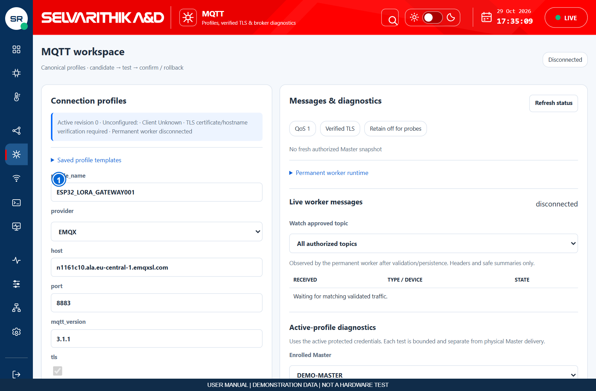
1. Profiles topics and diagnostics; 2. Canonical profile candidate; 3. Candidate test and confirmation. Demonstration only; click image to enlarge.
- Open MQTT Setup & Testing. Read the active profile summary and runtime state first. A pending draft is different from the active connection.
- On an already working EMQX deployment, do not rewrite the profile just to test it. Use Diagnostics on the active profile instead.
- For an intentional new profile, enter the canonical non-secret fields. Expand Security and Advanced settings as needed. Use the trusted CA appropriate to the broker hostname.
- Save candidate. This creates PENDING state; it does not prove connectivity or activate the candidate.
- Provide new credentials only through the approved local commissioning workflow. The web password control is write-only/disabled as appropriate; a blank value must not be interpreted as clearing an existing password.
The approved deployment is EMQX over TLS on port 8883. Use the existing saved hostname and distinct Master/Gateway client IDs. WebSocket settings from another client are not automatically supported by this firmware.
Certificate and hostname verification remain mandatory. A certificate expiry date alone does not prove the CA matches the broker. Do not disable verification to bypass TLS failure.
Back to contents
15 MQTT profile field reference
These exact 15 names are shared by the configuration contract. Keep client IDs distinct for concurrent devices. The topic builder joins topic_prefix, gateway_id and an approved message type; do not make up new topic names.
| Field | Meaning and supported contract rule |
|---|
| profile_name | Human-readable deployment/profile label; use validated form bounds. |
| provider | EMQX, HIVEMQ, MOSQUITTO or CUSTOM; use EMQX for this deployment. |
| host | Broker DNS hostname, not a URL with path or scheme. |
| port | Integer 1–65535; intended verified TLS deployment uses 8883. |
| mqtt_version | 3.1.1 in this contract; do not mix protocol versions. |
| tls | Must remain true; certificate/hostname verification required. |
| ca_cert | Trusted PEM CA material for the broker, validated by the implementation. |
| username | Broker account username, distinct from Gateway web login. |
| password | Write-only secret; provision locally, never export or log. |
| client_id | Unique stable MQTT client identity for this connecting process/device. |
| keepalive_s | Integer 15–300; default 60 seconds. |
| timeout_s | Integer 2–30; bounded connection/test timeout. |
| qos_default | 1; broker PUBACK still is not device execution confirmation. |
| topic_prefix | Canonical default selvarithik/gateway. |
| gateway_id | Canonical default GW001; match intended deployment. |
16 Test and confirm an MQTT candidate
- Before starting, confirm the enrolled Master identity, trusted CA, current revision and required broker topic permissions. A coordinator or peer that is unknown must remain unknown.
- Open Candidate test & switch. Supply the intended enrolled Master ID. Select Test candidate only when the ACL prerequisite and current transaction state permit it.
- Read the test result and transaction state. TLS/authentication failure is a real failure; successful form submission is not a connection test.
- Confirm tested switch only when READY_TO_CONFIRM and the required peer/connection evidence are present. Otherwise cancel the candidate or investigate the reported reason.
- If a revision conflict occurs, reload current state and review the newer settings. Never overwrite silently. After interruption, read the recovered transaction state before another action.
Saving a candidate does not start a cross-device switch deadline. Confirm/cancel and rollback are explicit. Do not clear someone else's existing pending transaction just to make buttons available.
The permanent worker retains ACL_CONFIRMATION_REQUIRED until the required operator assertion/permissions process is complete. Broker username/password success alone does not prove every subscription is authorized.
Approved message types: telemetry, status, command, command_ack, config, events, discovery, chat/message, chat/ack, chat/status, chat/command. Chat types are legacy contract entries; Private Chat development/use is outside this manual.
Back to contents
17 Test the active MQTT connection
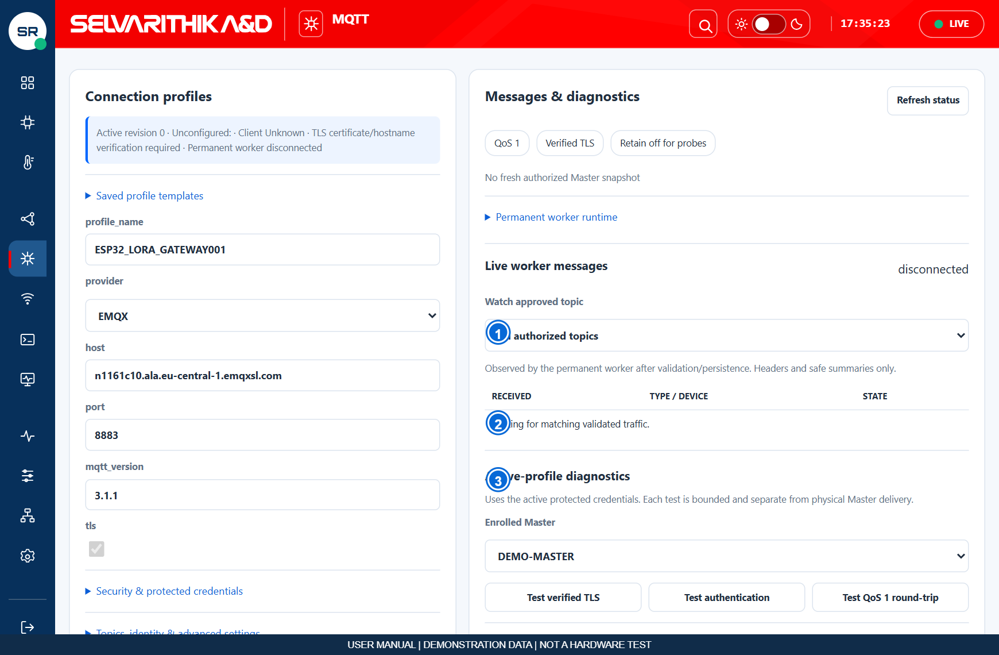
1. Filter observed messages; 2. Validated worker traffic; 3. Bounded connection tests. Demonstration only; click image to enlarge.
- Open MQTT then Diagnostics. Expand Permanent worker runtime and read connection, TLS, subscription readiness, ACL state, reconnect count, last error and queue evidence.
- Use Test verified TLS first. It checks the broker trust/hostname path. Next use Test authentication. Keep these results separate.
- Use the bounded QoS 1 round-trip test where authorized. A config PROBE tests its defined path; it is not a device command execution proof.
- Watch Live worker messages. Choose an approved-topic filter. Rows represent validated traffic observed by the permanent worker after its processing/persistence path.
- For physical validation, separately send PING through Command Center and inspect actual target ACK/RESPONSE. Then check newly received sensor timestamps in Dashboard.
Publish PROBE does not rewrite the active profile. Arbitrary topic publishing, wildcard subscriptions, retained probes and arbitrary secret-bearing JSON are intentionally not a general-purpose explorer.
Failure order: no DNS/TCP → check Internet; TLS failure → clock/CA/hostname/memory; authentication failure → locally stored credentials; subscription failure → ACLs; connected with no device data → target/topic/transport/sensor investigation.
Back to contents
18 Configure the separate device LAN listener
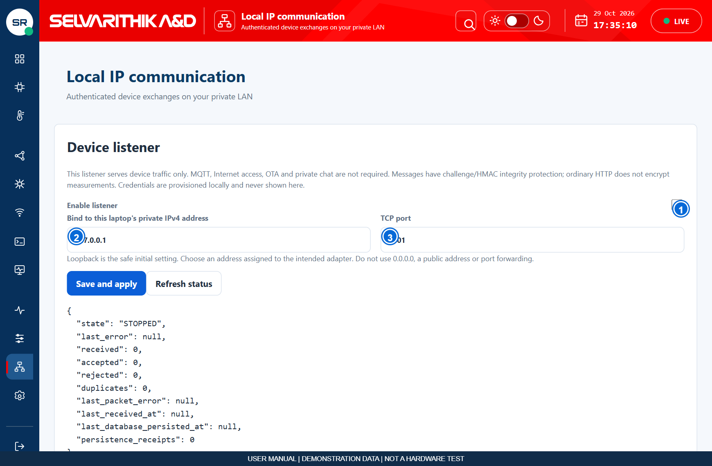
1. Device listener enable; 2. Laptop adapter address; 3. Separate listener port. Demonstration only; click image to enlarge.
- Open Local IP Communication. This is a device listener, separate from the browser server on 127.0.0.1:5000.
- Run ipconfig in PowerShell. Identify the currently active laptop Wi-Fi adapter IPv4 address. Do not choose a disconnected adapter, a historic DHCP address or the ESP32 address.
- When intentionally enabling LAN access, enter that assigned private address and an available device port, commonly 5001. Save and apply, then read listener status.
- Ensure the enrolled device is explicitly permitted and has its matching locally provisioned credential. Device permission alone does not create a secret or prove connectivity.
- On the Master, server_host must point to that laptop address and server_port to the device listener. 127.0.0.1 would point back at the ESP32 itself. Do not overwrite current working settings as part of diagnosis.
BIND_FAILED means the saved interface address/port cannot be bound or is unavailable. Dashboard can continue working. Compare ipconfig, current listener configuration and port usage; do not reset Wi-Fi or MQTT to fix a laptop bind error.
Use a trusted private LAN. Challenge/HMAC protects message integrity; HTTP does not encrypt readings. Do not send new secrets through HTTP. No 0.0.0.0/public bind or router port forwarding is needed.
A Windows Firewall change, if required, should be scoped to the intended private adapter and device port. Do not disable the firewall globally.
ipconfig
Get-NetTCPConnection -LocalPort 5001 -ErrorAction SilentlyContinue
Back to contents
19 Switch IP and MQTT with recovery
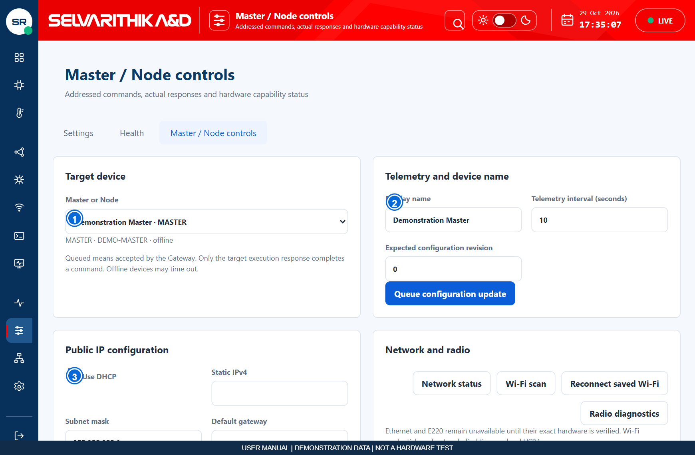
1. Target device; 2. Name and telemetry interval; 3. Public IP configuration. Demonstration only; click image to enlarge.
- Open Master / Node Controls and select the exact enrolled target. Obtain its latest public configuration revision. Ensure the destination transport is already commissioned and usable.
- Find the transport transaction controls lower on the page. Choose the intended IP/MQTT selection, recovery timeout and current revision. Enter your Gateway administrator password only in the reauthentication control.
- Prepare the transaction. Check its ID/state. Preparation does not replace the active transport or begin the trial deadline.
- Apply the prepared transaction. The device records its recovery marker before trying the new runtime path. Wait for the response grace period and new-path connectivity.
- Send the required transaction-correlated PING over the selected new path. Require actual observed ingress, ACCEPTED ACK and completed RESPONSE before Confirm.
- Confirm only with verified new-path evidence. Cancel while permitted if not proceeding. Timeout or reboot during an uncommitted trial restores the old selection; inspect actual state before retrying.
Here protocol change means transport selection, not changing MQTT 3.1.1 or packet schema. The Gateway admin password is verified at the Gateway and never forwarded to ESP32.
Reauthentication is allowed over loopback or HTTPS. Merely queuing prepare/apply/confirm is not commitment. Missing peer evidence, old-path proof or a lost response remains failure/unknown.
Do not attempt transport trials while the only recovery path is unverified. An existing saved MQTT profile is reused rather than replaced by a transport selection.
Back to contents
20 Read network and mesh evidence
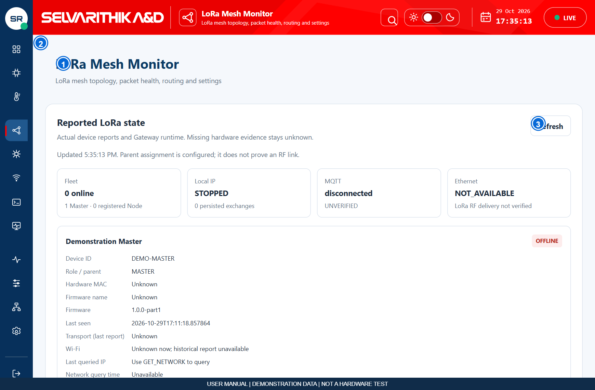
1. LoRa monitor; 2. Reported nodes and links; 3. Refresh evidence. Demonstration only; click image to enlarge.
- Open Network & Communication. Compare Wi-Fi association, actual Internet check, Gateway reachability, selected transport and last-reported timestamps separately.
- Open LoRa Mesh Monitor. Read registered devices, configured Master assignments and available route diagnostics. A configured line is not evidence of a received RF packet.
- Use GET_NETWORK, GET_RADIO_STATUS, GET_MESH_STATUS and GET_ROUTE_INFO against the connected target to refresh supported device-reported evidence.
- For a future real Master/Slave test, confirm both identities/roles, compatible module configuration, authentication/peer allowlists and the selected forwarding policy.
- To prove Slave → Master → Gateway, use MASTER_ONLY and verify a fresh Slave-origin measurement at the Master and then in Gateway storage/dashboard. Direct Slave delivery must not be counted as forwarding.
An available UART, AUX high, initialized module or configured parent does not prove RF communication. RSSI requires an actual observation. E220 SNR is unavailable in this driver and must not be invented.
The current unavailable/damaged Slave prevents a new physical pair test. Simulators exercise software behavior only.
Back to contents
21 Configure sleep and restart carefully
- Select the target in Master / Node Controls. Check the latest revision and current clock/time source before planning sleep.
- For a recurring schedule, choose DEEP or LIGHT, radio KEEP or DEEP, start minute, duration, enabled days and UTC offset. Start minute is hour × 60 + minute; 22:30 is 1350.
- Use duration 60–86400 seconds and the validated day mask 1–127. The mask uses firmware weekday bits, not a comma-separated day list; verify the intended weekdays before applying. Mask 127 selects every day.
- For India, UTC offset is 330 minutes. A UTC offset does not provide Internet time; first confirm time is valid or use the supported time-sync operation.
- Queue the schedule only for an intentional change and wait for the execution RESPONSE. Expect the device to go offline during sleep. Critical work or active transactions can prevent entry.
- After timer wake or RESTART, verify device identity, reconnect status, current configuration and returned command outcome before sending more changes.
DEEP restarts on timer wake. LIGHT retains RAM but suspends Wi-Fi/network activity. E220 DEEP does not receive packets. An asleep board cannot be remotely awakened by an ordinary MQTT command.
SLEEP_NOW and CANCEL_PENDING_SLEEP are operational handlers; cancellation works before entry while awake. Power savings and wake reliability require measurements on real hardware.
Master restart recovery and Slave restart recovery are behavior of the same shared firmware. They are not duplicate command names.
Back to contents
22 Use health diagnostics and settings
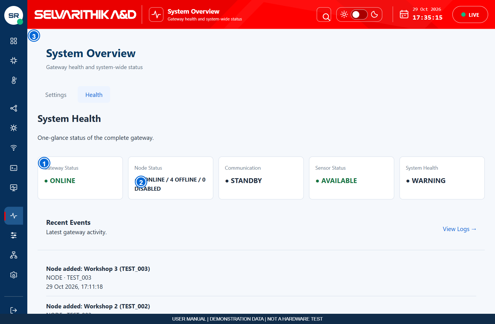
1. Health summary; 2. Node online and offline counts; 3. Recent events and connections. Demonstration only; click image to enlarge.
- Open Health for a summary of Gateway state, nodes and sensors. Check the underlying report timestamps; WARNING can reflect missing hardware rather than a server crash.
- Open Diagnostics to inspect recent events. Filter by the relevant device/time and correlate with command IDs, reconnect attempts and last-success times.
- Open Settings to view legacy registry/system information. Distinguish these saved Gateway metadata fields from live firmware-owned settings.
- Use Master / Node Controls and a completed target response for supported remote configuration. A registry Save alone does not prove the board changed.
- Use Account Settings for user access. Do not share login secrets, upload protected token files or include full private databases in support reports.
Legacy Firmware and Private Chat routes may remain in navigation. Their existence does not make them part of the current deployment/test workflow. OTA, BLE and Private Chat feature work are excluded.
Back to contents
23 Open the ESP32 local web page
- Power the commissioned ESP32 and connect the laptop to its intended local network. Read the board's actual DHCP IP from its status/USB monitor or the router device list.
- Open http://ACTUAL_ESP32_IP in the browser. A previously observed IP such as 192.168.1.105 is historical, not a guaranteed address.
- Use the ESP32 local username and saved password. admin/admin applies only before the initial password change or an explicitly authorized account recovery; it is not a universal current password.
- Allow the asynchronous verifier to finish. If it remains at Verifying, wait for the bounded result, reload once and inspect serial/status connectivity. Repeated submissions can trigger rate limiting.
- If using the recovery AP, connect to the device's setup SSID with its saved AP credential and use its reported AP IP. 192.168.100.1 is conditional and may change to avoid overlap.
The ESP32 web account is separate from the Gateway account. Sessions expire. A reboot or account change may require signing in again.
HTTP does not encrypt passwords/cookies. Use local access only on a trusted network. New Wi-Fi, mesh and broker credentials require physical local commissioning, not ordinary HTTP/MQTT.
No board is currently available for a new physical login check. ESP32 illustrations show the compiled page source with simulated replies.
Back to contents
24 Use the ESP32 Dashboard
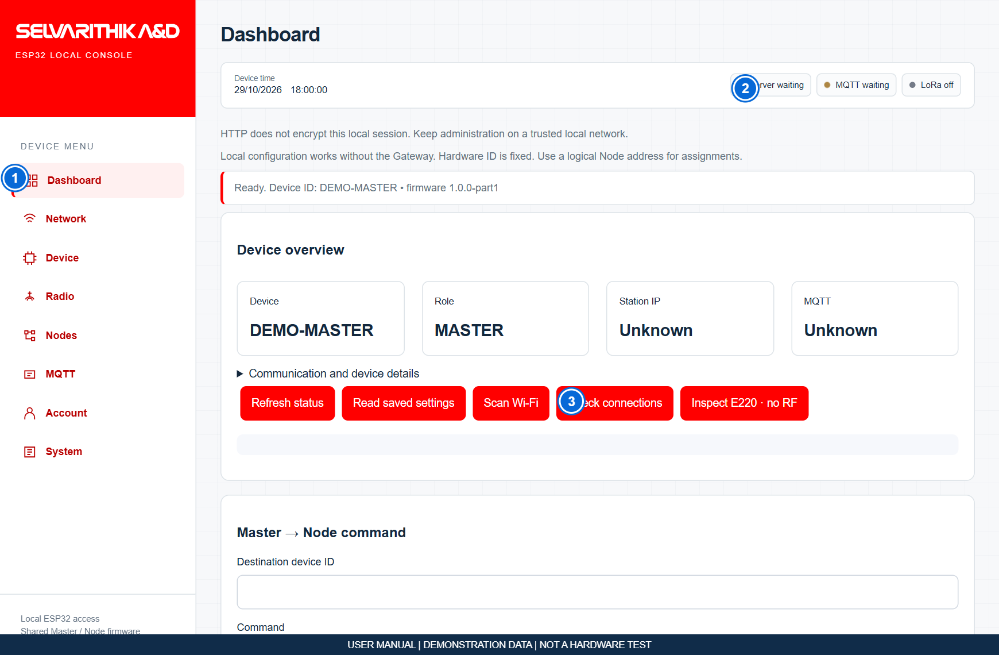
1. Communication pages; 2. Separate connection indicators; 3. Refresh connection evidence. Demonstration only; click image to enlarge.
- Use the white sidebar on laptop or horizontal menu on mobile. Company branding stays in the sidebar; there is no separate full-width top header.
- Read device ID, role and reported station IP. These identify the board you are configuring.
- Read Server, MQTT and LoRa indicators separately. A date/time animation or green Wi-Fi icon is not end-to-end delivery proof.
- Use Check connection to request current communication evidence. Use read-only radio inspection when needed; it does not transmit or write registers.
- Refresh status after an interruption. If a value is unknown or unavailable, investigate the actual path rather than assuming the board is offline or working.
Sensor readings are intentionally absent from ESP32 pages. Use Gateway Live Telemetry to view temperature, humidity, current, power and raw MQ135 values.
Back to contents
25 Configure ESP32 network settings
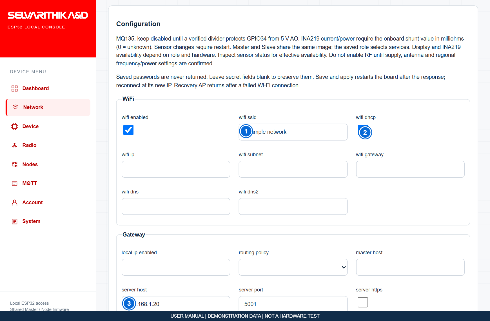
1. Station network; 2. DHCP selection; 3. Laptop device listener host. Demonstration only; click image to enlarge.
- Open Network and first read the saved configuration. Keep the current working SSID and credentials unless an intentional network change is required.
- Use DHCP normally. If static IP is intentionally required, supply a valid address, subnet, router and DNS on the actual LAN, avoiding conflicts and reserved network/broadcast addresses.
- Gateway fields point to the laptop's device listener, not the browser server loopback address. A Slave assigned through a Master also needs the correct Master address/identity and routing policy.
- Use Wi-Fi scan only when needed; it is asynchronous and uses supported 2.4 GHz driver defaults. The classic ESP32 in this project does not join a 5 GHz-only SSID.
- Use Save and apply only after reviewing the whole visible configuration. A changed connection setting can restart the device. Reconnect at the actual DHCP IP and read the saved revision back.
New credentials are blocked from the ordinary config endpoint and require USB provisioning. Blank secret fields preserve existing secrets. Never select clear-password behavior as a diagnostic step.
local_ip_enabled cannot bypass the protected Gateway transport trial. Internet probes and TLS require the correct public CA/time configuration. Ethernet controls stay unavailable without a supported driver.
Back to contents
26 Configure shared firmware identity and timing
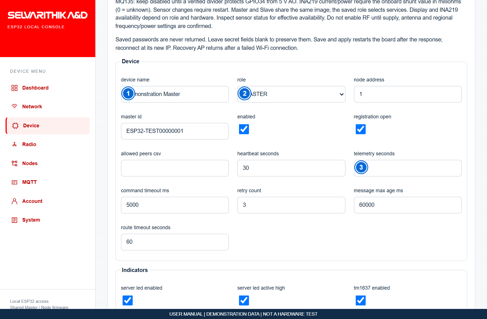
1. Display name; 2. Persisted role; 3. Reporting interval. Demonstration only; click image to enlarge.
- Open Device settings. Confirm MASTER or NODE against the physical board identity. Both roles use one shared firmware image.
- Set only an intended display name; keep device ID unchanged. For a NODE, verify master_id and node_address. Do not swap roles just because USB COM numbers changed.
- Review enabled state, registration policy, explicit peers, heartbeat_seconds, telemetry_seconds and bounded retry/timeout settings.
- If applying a real change, save once and wait for any required reboot. Read back the new configuration revision and role. On the Gateway, verify the same board identity is enrolled.
- Use GET_CAPABILITIES/GET_CONFIG through the actual transport to check what a deployed board supports before using newly built commands.
Main timing bounds: telemetry 2–3600 s; heartbeat 5–3600 s; retries 0–5; command timeout 1000–30000 ms; message age 1000–300000 ms; route timeout 10–86400 s; max_hops 1–15.
UI source/build completion does not update an already running ESP32 until a separately authorized upload. Do not assume every new command exists on an older board.
Back to contents
27 Inspect and configure E220
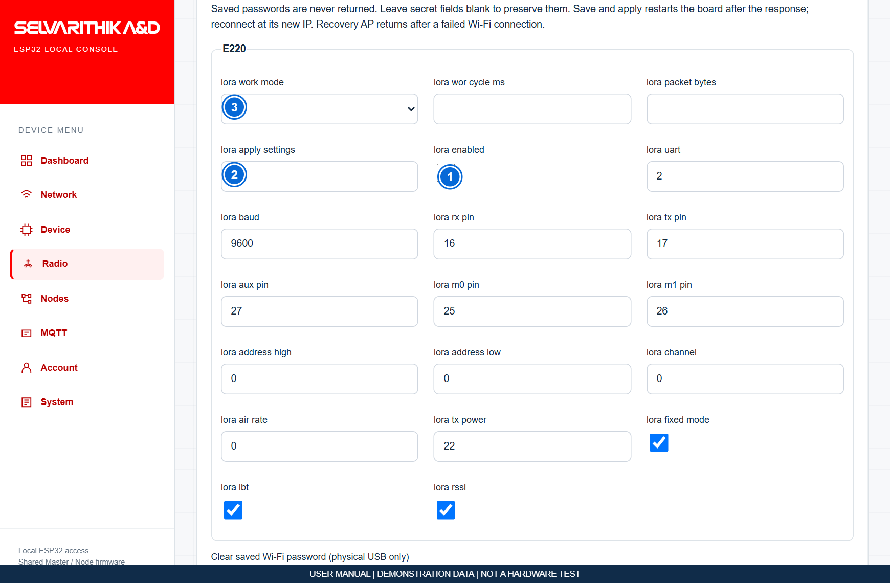
1. Radio enable; 2. Explicit register-write permission; 3. Module mode. Demonstration only; click image to enlarge.
- Open LoRa configuration. Confirm the actual module is E220-900T22D and wiring/supply/antenna are correct before enabling any RF operation.
- Inspect public registers first. Verify UART2 with module TXD → GPIO16, RXD → GPIO17, M0 →25, M1 →26 and AUX →27, common ground and a stable suitable supply.
- Match permitted address/channel/air-rate/packet/mode settings between peers. Use the actual device manual and an approved regional profile. Do not guess a legal RF frequency or select maximum power automatically.
- Treat lora_apply_settings as explicit register-write permission. Leave it off during read-only diagnostics. After a permitted edit, require the module acknowledgement and readback.
- Only after both peers are ready, perform a bounded addressed command and actual RF receive test. Correlate ACK and final RESPONSE, then inspect real routing and received data.
Supported public choices: UART baud 1200/2400/4800/9600/19200/38400/57600/115200; power 10/13/17/22 dBm where approved; packet size 64/128/200; WOR cycle 500–4000 ms in 500 ms steps. air_rate is a register code, not a free-form spreading-factor field.
NORMAL is M1/M0 00; WOR_TX 01; WOR_RX 10; configuration/deep mode 11. AUX indicates readiness, not remote delivery. The page does not supply generic SPI-LoRa bandwidth/SF/CR knobs.
Do not transmit without an antenna or choose radio parameters solely from an Internet example. Physical RF and regional approval are pending acceptance items.
Back to contents
28 Configure peers and routing
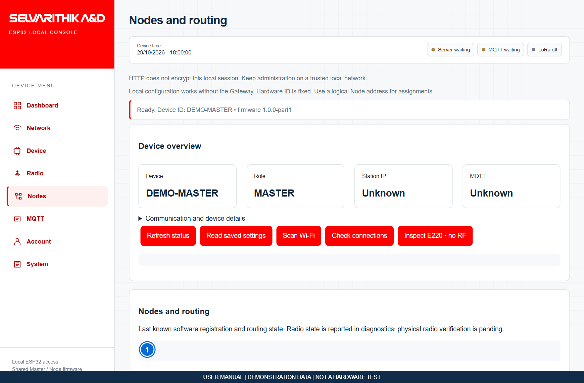
1. Reported node and routing state; 2. Addressed command target. Demonstration only; click image to enlarge.
- Open Nodes and routing to read reported node state. Master assignment and explicit peer configuration are edited under Device settings; routing_policy is under Network Gateway settings.
- Use MASTER_ONLY for a test that must prove Slave forwarding through the Master. DIRECT_ONLY and DIRECT_PREFERRED have different fallback semantics and must be chosen intentionally.
- Preserve the established mesh identity/key. Keys are provisioned locally and are not read back by web APIs.
- For addressed commands, select the intended destination device ID and a supported command. If the local page reports QUEUED, refresh actual status for ACK/result evidence.
- Compare GET_MESH_STATUS and GET_ROUTE_INFO with current node last-seen data. Expired or unavailable routes must not be presented as active.
A configured parent, peer list or matching UART setting is not verified mesh communication. Slave-to-Slave and multi-hop behavior require real supported routes and separate acceptance, not merely two registered rows.
Back to contents
29 Use ESP32 system and MQTT pages
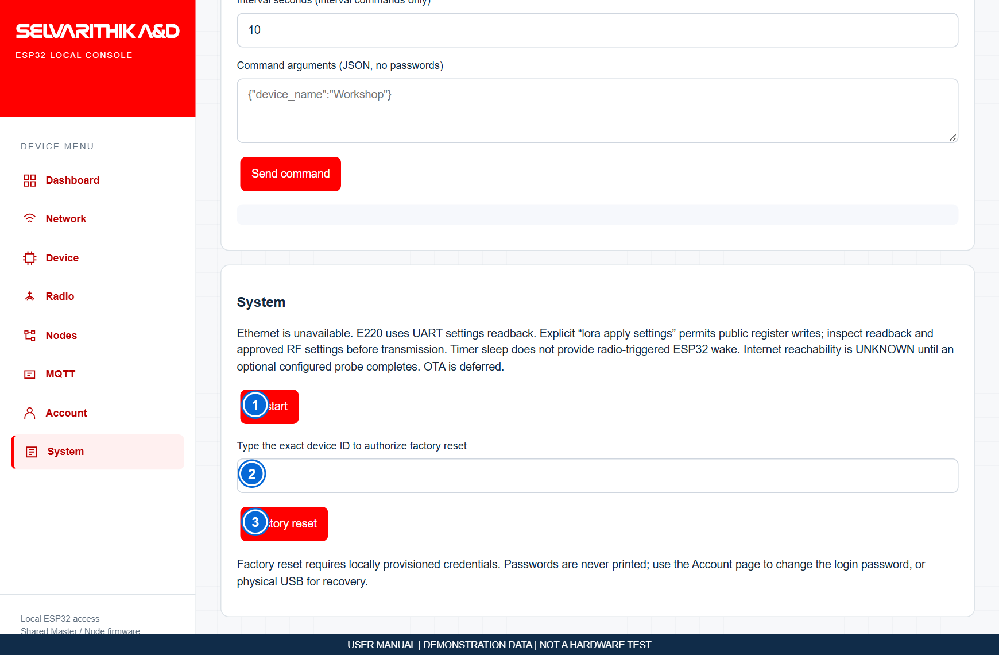
1. Controlled restart; 2. Identity gate for destructive reset; 3. Factory reset is destructive. Demonstration only; click image to enlarge.
- On System, inspect the controlled restart and factory reset actions. Indicator, sleep and sensor settings are grouped under Device settings; preserve current sensor options.
- Read sleep mode/duration/day mask/UTC offset as described earlier. Sleeping means expected loss of normal Wi-Fi/MQTT availability, not a continuously online device.
- Use Restart only for an intended interruption. Factory reset erases saved settings and is not a routine repair for login, TLS or sensor problems.
- On /mqtt, use the same canonical candidate/test/confirm/cancel process as the Gateway. A staged form is not active until the actual commit conditions pass.
- If Master config differs is shown, review field-level differences, revision and peer availability. A local-only client ID difference or unverifiable secret is not automatically a shared configuration mismatch.
Built-in LED and TM1637 indicators are communication aids, not broker/device proof. The Master display is intended for connection time and Wi-Fi RSSI; sensor data belongs on the Gateway.
Current sensor configuration bounds include INA219 address decimal 64–79, shunt 0–1000 milliohms and MQ135 warm-up 60–604800 seconds. Do not enable a sensor just because a template exists.
Back to contents
30 Provision secrets through physical USB
- Use the correct data cable and identify the current COM port. Close serial monitors before opening a commissioning helper. Confirm the physical device ID.
- For an intentional local ESP32 password replacement, run commission.py with operation password as shown. Type the new password twice when prompted.
- Hidden input shows no characters or stars. This is expected. Press Enter after typing. Use an actual interactive PowerShell console, not an output-only panel.
- For an intentional MQTT credential stage, prepare a non-secret canonical profile JSON and obtain the current revision. Run the mqtt operation only for that intended candidate; do not rotate a working secret for testing.
- Read the sanitized success/rejection result. A missing response is unknown, not success. Verify the saved state before repeating a mutation.
The example commands use COM8 only as a historical example. Replace it with the actual verified port. Commissioning does not flash or erase the board.
Gateway broker secrets use backend/commission_mqtt.py with a non-secret profile and explicit revision. Use --pending-password only for an exactly matching existing PENDING candidate. Do not run initial commissioning on an active deployment.
Legacy helpers provision_local_ip.py and device_acceptance.py have fixed-port/side-effect assumptions, including sensor changes in the former. They are not generic no-change diagnostics. Use an identity-checked, reviewed commissioning workflow when preserving sensor settings.
cd "D:\esp32 selva\ESP32_LoRa_ESP32_Firmware"
& "C:\Users\Admin\.platformio\penv\Scripts\python.exe" tools\commission.py --port COM8 --operation password
# Read-only E220 inspection, no RF or register writes
& "C:\Users\Admin\.platformio\penv\Scripts\python.exe" tools\radio_inspect.py --port COM8 --read-only
Back to contents
31 Build firmware before a future upload
- With no board connected, run the firmware software checks and build shown below. These do not establish physical sensor, TLS or RF behavior.
- The shared artifact is .pio/build/esp32dev/firmware.bin. esp32_master and esp32_slave are compatibility environments; role is persisted configuration, not a reason to keep separate source trees.
- The project selects huge_app for a supported 4 MB ESP32: app0 at 0x10000 with 0x300000 bytes, no app1, and SPIFFS at 0x310000 with 0xE0000 bytes. NVS remains at 0x9000 with 0x5000 bytes.
- Before a future physical upload, identify chip/flash/partition state and take a private verified full-flash backup. A changed partition table can invalidate existing filesystem data. An old filesystem image must not be copied into a smaller region.
- Upload only under a separately reviewed deployment procedure with settings preservation and recovery. No erase, factory reset, bootloader change or partition migration is part of using this manual.
The second OTA slot is absent in huge_app. OTA work is deferred. COM ports can change after reconnecting; Master and Slave must be identified by device ID rather than a remembered port.
cd "D:\esp32 selva\ESP32_LoRa_ESP32_Firmware"
& "C:\Users\Admin\.platformio\penv\Scripts\python.exe" test\check_contract.py
& "C:\Users\Admin\.platformio\penv\Scripts\python.exe" test\build_web_assets.py --check
& "C:\Users\Admin\.platformio\penv\Scripts\platformio.exe" run -e esp32dev
Back to contents
32 Back up restore and maintain the Gateway
- Run backup from the Gateway directory. Keep the returned encrypted archive and verify it before relying on it.
- Automatic backups run every 24 hours and keep seven verified archives. Check deployment status for the last verified backup. A running computer is required for scheduling.
- To restore, stop the Gateway first. Run restore without --apply to preview the selected archive, then verify its identity/date. Only add --apply when intentionally replacing data.
- An apply creates a pre-restore backup and durable recovery marker. If interrupted, inspect the marker/recovery result before restarting; do not delete it to force startup.
- Telemetry retention is optional and disabled. Preview maintenance with a chosen retention period; apply only after a backup and while stopped. It is not required for normal viewing.
Windows backups are DPAPI encrypted and tied to the original Windows user/computer context. They are not independently portable disaster-recovery archives. Arrange authorized reprovisioning/machine-loss recovery separately.
SQLite is appropriate for this local single-host Gateway. Keep the DB on local storage, avoid simultaneous manual edits and retain backups. The archive uses per-database consistent snapshots, not one cross-database atomic moment; its memory limit is 256 MiB.
dist/Gateway is a one-folder package: keep Gateway.exe and _internal together. It excludes all user data and secrets. A fresh machine requires separately provisioned data/account/secret recovery; copying only the EXE is insufficient.
cd "D:\esp32 selva\ESP32_LoRa_Project"
.\dist\Gateway\Gateway.exe backup --data-dir .\data
.\dist\Gateway\Gateway.exe verify-backup --data-dir .\data --archive "FULL_ARCHIVE_PATH"
.\dist\Gateway\Gateway.exe restore --data-dir .\data --archive "FULL_ARCHIVE_PATH"
.\dist\Gateway\Gateway.exe maintenance --data-dir .\data --retention-days 90
Back to contents
33 Troubleshoot common problems
| Symptom | Check next without resetting settings |
|---|
| Browser page does not open | Start process; check status and /healthz; verify 127.0.0.1:5000 on the laptop. |
| GATEWAY_ALREADY_RUNNING | Use the existing instance or clean Stop script. Do not kill unrelated processes. |
| Gateway login returns to Sign in | Use correct account; expired/restarted session; complete required password change. |
| ESP32 Verifying or invalid login | Actual board IP, asynchronous result, rate limit and saved local password. USB recovery only if intentionally authorized. |
| BIND_FAILED | Compare saved device listener IP with active ipconfig address and check its port. Browser server can still work. |
| TLS or certificate failure | Actual clock, trusted CA chain, hostname, DNS/TCP and free memory. Never disable verification. |
| MQTT connected but no telemetry | Subscription ACL/readiness, target identity, actual selected transport and fresh device reports. |
| DHT11 READ_ERROR | Power/wiring/GPIO4, module pull-up, timing and sensor condition. Never replace error with fabricated values. |
| INA219 no current or power | Actual I2C address, shunt calibration, VIN wiring and load. Valid near-zero current may be correct. |
| MQ135 not configured or warming | Verified divider, intended enabled state and warm-up; readings remain raw. |
| Offline or delayed dashboard | Check received timestamps, heartbeat/report intervals, device sleep, laptop sleep and transport errors. |
| Command timeout | Same command ID, actual dispatch, target online, ingress/ACL and response. Reconcile before retry. |
| Radio ready but no peer | Only UART/settings may be ready; inspect actual RF reception, matching peers and approved profile. |
34 Run an acceptance test in order
- Software only: run the Gateway unittest suite and firmware contract/assets/build checks. Keep fixture results separate from physical tests.
- Server: start once, confirm /healthz, normal authenticated login and live browser polling. Confirm unauthorized administration is rejected.
- Broker: verified TLS, authentication, subscription readiness and bounded approved-topic round trip. Confirm no other MQTT client is reusing the same client ID.
- Master: connect the actual board, confirm device ID/role, then send PING. Save the correlated ACK, RESPONSE and transport evidence.
- Telemetry: observe at least ten intended reporting intervals. Confirm fresh temperature/humidity and other valid fields are persisted and displayed; record stale gaps and sensor errors honestly.
- Recovery: with authorization, test reconnect/restart and confirm settings/identity survive. Test sleep or transport rollback separately with a verified recovery path.
- LoRa pair: only with two functional peers, approved radio settings and antennas. Verify a Slave-origin reading travels through the Master to Gateway, not a direct fallback.
- Record software version, time, device IDs, command IDs, transport, counts and actual errors. Mark unavailable hardware tests pending instead of passed.
This manual was verified against current source and isolated screenshots. It does not replace the project acceptance reports or claim new physical results.
cd "D:\esp32 selva\ESP32_LoRa_Project"
.\.venv\Scripts\python.exe -m unittest discover -s tests -p "test_*.py"
Back to contents
35 Daily operation and mobile use
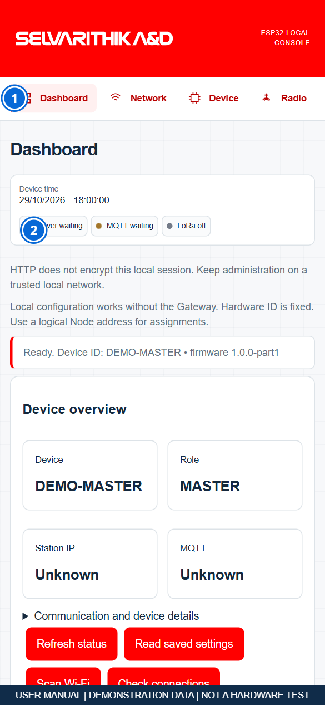
1. Horizontal mobile navigation; 2. Connection indicators. Demonstration only; click image to enlarge.
- Start the laptop and sign in to Windows. Confirm the automatic Gateway process is running, or start it manually once.
- Sign in to the Gateway and check Dashboard freshness, device online state and MQTT or Local IP diagnostics.
- Use PING/GET_STATUS for a bounded health check when needed. Avoid repeated reconnect, restart or configuration commands during normal telemetry.
- Before a deliberate change, record current public settings/revision and verify a recent encrypted backup. Change one area, wait for the real result, then read it back.
- On mobile, use the Gateway only through an intentionally configured protected access path. This deployment binds the browser UI to laptop loopback, so a phone cannot open the laptop by using 127.0.0.1.
- An ESP32 local page can be opened from the same trusted network using its actual IP. Scroll its compact menu horizontally. Do not expose that HTTP page to the Internet.
- When finished, log out. Stop the Gateway only if telemetry collection can pause. A stopped or sleeping laptop cannot collect continuous data.
Future Internet access needs a reviewed HTTPS reverse proxy or other protected deployment, trusted-host/proxy settings and recovery planning. No public endpoint was configured by this manual.
Back to contents
36 Configuration ownership and preservation
Gateway SQLite stores its accounts, registry, mappings, telemetry and command history. ESP32 NVS stores the board identity and device configuration. A widget edit belongs to the Gateway; it does not write firmware GPIOs.
Broker candidates use the shared canonical profile and explicit revisions. Public device CONFIG_UPDATE has an allowlist. Passwords, mesh keys and tokens are not ordinary remote configuration fields.
When equivalent public configurations differ, inspect field-level comparison and revisions. Local-only fields can legitimately differ. A hidden secret cannot be verified by reading its value back.
A build validates source compilation; a simulated response validates software paths; a broker test validates its stated MQTT operation; only a real device response proves the corresponding physical command path.
| Area | Owner and normal action |
|---|
| Dashboard icons, colors, precision | Gateway sensor mapping; no device driver change. |
| Sensor pins, INA219 shunt/address | ESP32 configuration; hardware must match. |
| Device display name and interval | Target command + execution response, then Gateway projection. |
| Wi-Fi, mesh and broker passwords | Approved physical/local protected provisioning; never normal MQTT or HTTP. |
| MQTT active/candidate profile | Canonical transaction, revision and peer checks. |
| IP versus MQTT selection | Gateway admin-confirmed trial, actual new-path proof and commit/rollback. |
| RF configuration | Verified E220 capability, explicit permission/readback and approved regional profile. |
| Sleep or restart | Target admission/drain/recovery; expected loss of availability. |
| Backups and executable startup | Local Gateway deployment; no ESP32 upload. |
All annotated page images
Gateway Login
1. Company identity; 2. Existing Gateway username; 3. Existing Gateway password. Demonstration only; click image to enlarge.
Gateway Dashboard
1. Navigation; 2. Gateway identity; 3. Live telemetry by device. Demonstration only; click image to enlarge.
Gateway Nodes
1. Page title; 2. Device registry; 3. Device actions. Demonstration only; click image to enlarge.
Gateway Sensors
1. Add a mapping; 2. Search mappings; 3. Configured readings. Demonstration only; click image to enlarge.
Gateway Command
1. Select a device; 2. Commands and responses; 3. Command composer. Demonstration only; click image to enlarge.
Gateway Controls
1. Target device; 2. Name and telemetry interval; 3. Public IP configuration. Demonstration only; click image to enlarge.
Gateway Mqtt
1. Profiles topics and diagnostics; 2. Canonical profile candidate; 3. Candidate test and confirmation. Demonstration only; click image to enlarge.
Gateway Local Ip
1. Device listener enable; 2. Laptop adapter address; 3. Separate listener port. Demonstration only; click image to enlarge.
Gateway Network
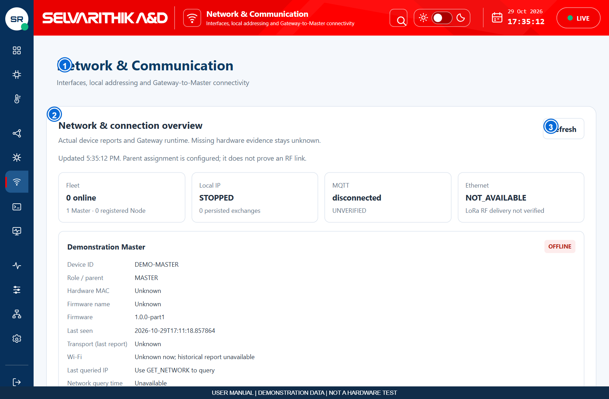
1. Network overview; 2. Reported connection evidence; 3. Refresh reported state. Demonstration only; click image to enlarge.
Gateway Mesh
1. LoRa monitor; 2. Reported nodes and links; 3. Refresh evidence. Demonstration only; click image to enlarge.
Gateway Health
1. Health summary; 2. Node online and offline counts; 3. Recent events and connections. Demonstration only; click image to enlarge.
Gateway Logs
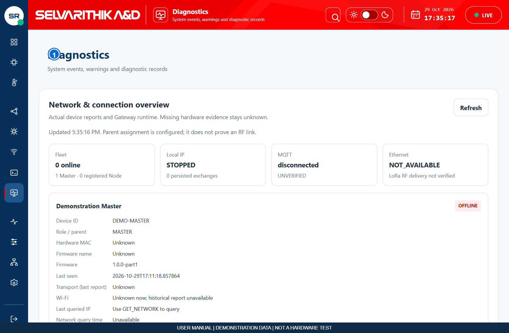
1. Diagnostics; 2. Recorded events; 3. Filter entries. Demonstration only; click image to enlarge.
Gateway Settings
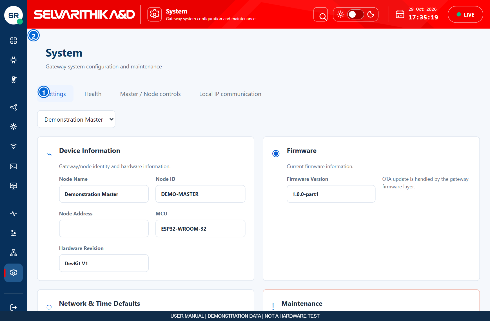
1. System pages; 2. Gateway settings; 3. Explicit save or action. Demonstration only; click image to enlarge.
Gateway Accounts
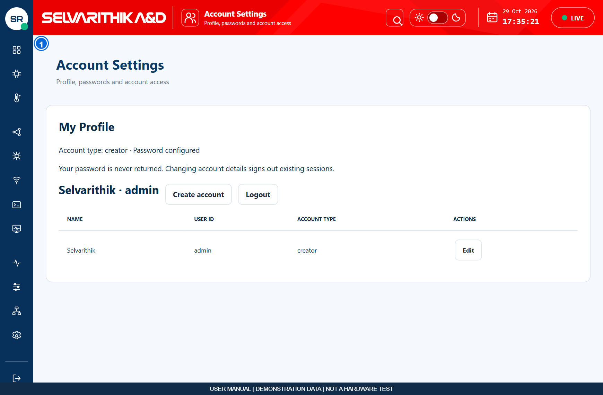
1. Existing account and access settings; 2. Account fields; 3. Authorized account actions. Demonstration only; click image to enlarge.
Gateway Mqtt Diagnostics
1. Filter observed messages; 2. Validated worker traffic; 3. Bounded connection tests. Demonstration only; click image to enlarge.
Gateway Sensor Editor
1. Sensor mapping editor; 2. Sensor management beneath editor. Demonstration only; click image to enlarge.
Gateway Mobile
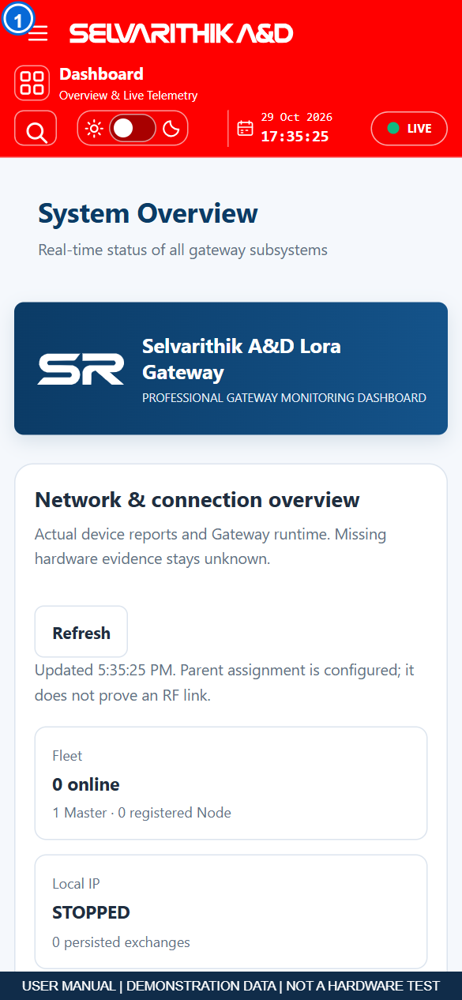
1. Mobile header; 2. Sensor cards. Demonstration only; click image to enlarge.
Esp32 Dashboard
1. Communication pages; 2. Separate connection indicators; 3. Refresh connection evidence. Demonstration only; click image to enlarge.
Esp32 Network
1. Station network; 2. DHCP selection; 3. Laptop device listener host. Demonstration only; click image to enlarge.
Esp32 Device
1. Display name; 2. Persisted role; 3. Reporting interval. Demonstration only; click image to enlarge.
Esp32 Radio
1. Radio enable; 2. Explicit register-write permission; 3. Module mode. Demonstration only; click image to enlarge.
Esp32 Nodes
1. Reported node and routing state; 2. Addressed command target. Demonstration only; click image to enlarge.
Esp32 System
1. Controlled restart; 2. Identity gate for destructive reset; 3. Factory reset is destructive. Demonstration only; click image to enlarge.
Esp32 Mqtt
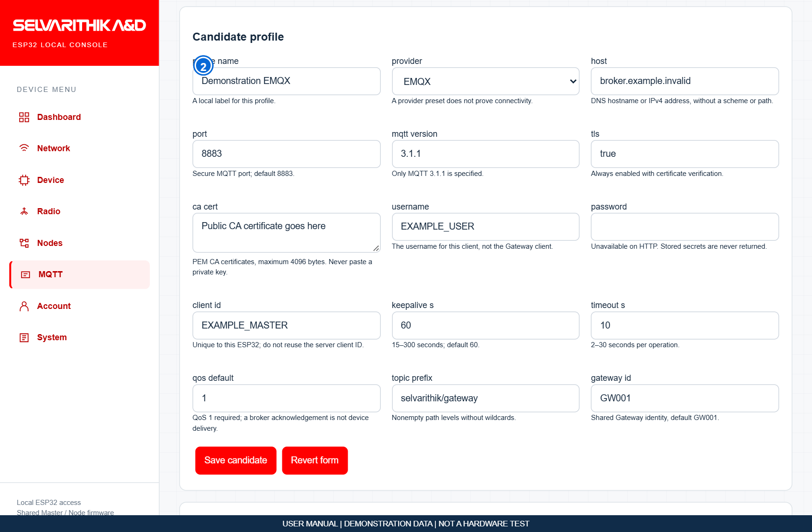
1. Candidate profile; 2. Operation feedback; 3. Canonical profile form. Demonstration only; click image to enlarge.
Esp32 Sleep
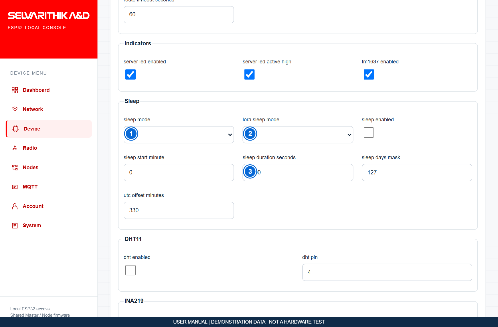
1. ESP32 sleep mode; 2. Radio sleep behavior; 3. Timer duration. Demonstration only; click image to enlarge.
Esp32 Login
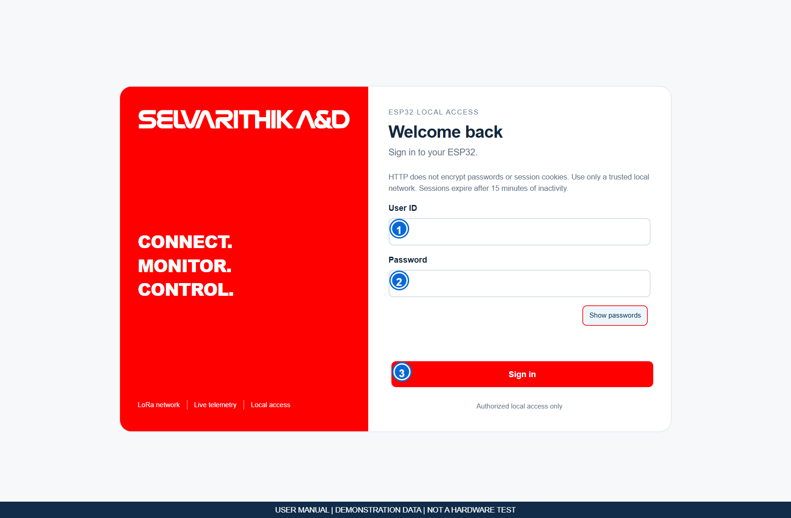
1. Local ESP32 username; 2. Saved local password; 3. Sign in. Demonstration only; click image to enlarge.
Esp32 Mobile
1. Horizontal mobile navigation; 2. Connection indicators. Demonstration only; click image to enlarge.